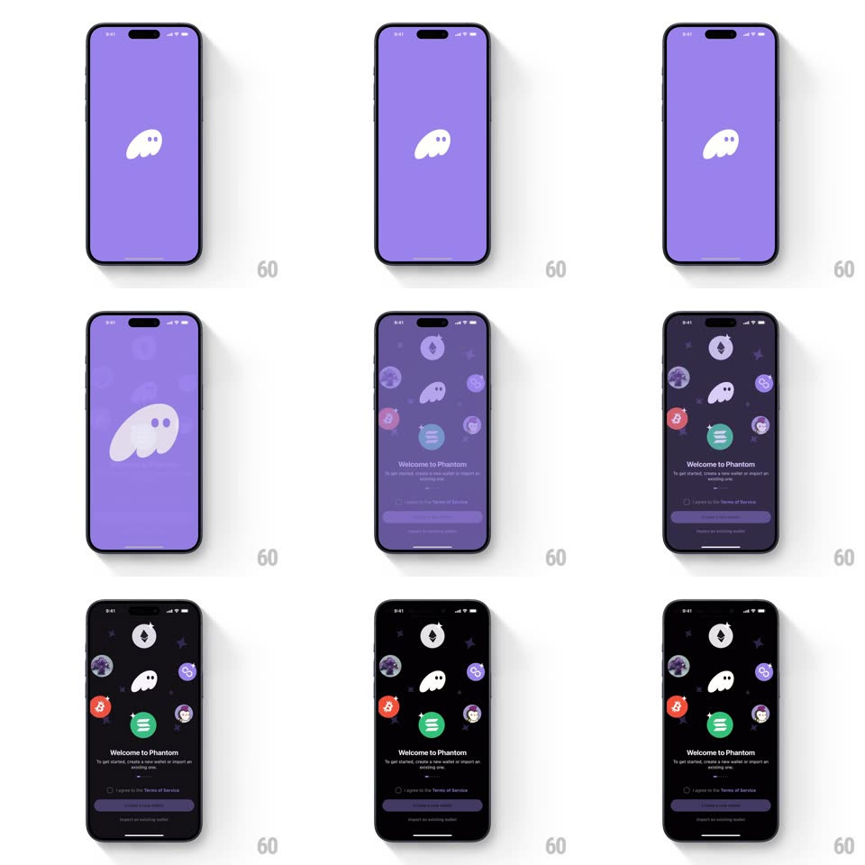

Media
Frame-by-frame

Rebuild this interaction 1:1: Phantom's splash-to-welcome - the purple splash screen's white ghost mascot drifts, then the background deepens to near-black as the ghost morphs into the center of a floating ring of crypto coin badges, and the "Welcome to Phantom" block with its terms checkbox and buttons bounces up into view.

Rebuild this interaction 1:1: Phantom's splash-to-welcome - the purple splash screen's white ghost mascot drifts, then the background deepens to near-black as the ghost morphs into the center of a floating ring of crypto coin badges, and the "Welcome to Phantom" block with its terms checkbox and buttons bounces up into view. ## Integration Integration: stack-agnostic spec - springs given as stiffness/damping, timed motions as duration + curve; map every value to your framework and animation library of choice. ## Scene Splash: solid purple field with the white Phantom ghost mascot center. Welcome: near-black background, the ghost at the middle of a loose arrangement of coin badges (Ethereum, Solana, Bitcoin, and others) with sparkle marks, "Welcome to Phantom" headline, subcopy, "I agree to the Terms of Service" checkbox, a primary button, and "I already have a wallet" link. ## Motion spec Pattern: staged splash morph into onboarding. - Splash: the ghost drifts gently (translateY +/-8px with slight rotate +/-3deg, 2s loop) - a floating hold while loading. - Transition: the background shifts purple -> near-black (600ms, ease-in-out) as the ghost scales down (1 -> 0.55) and rises to its final position (translateY -60px, same window). - The coin badges pop in around the ghost in a staggered ring (each scale 0 -> 1, spring ~400/18, 60ms apart, clockwise from top), each landing with a small wobble; sparkles twinkle on a 1.5s loop. - The welcome block slides up from the bottom (translateY 60px -> 0, spring ~320/20, 500ms) - headline, subcopy, checkbox, and buttons arrive as one unit with a soft overshoot. - The badges keep drifting in place (translateY +/-4px, random phases, 2.5-3.5s loops). ## Calibration - One continuous transition (~1.2s splash-to-settled) - no hard cut between splash and welcome. - The ghost never disappears - it travels from splash hero to badge centerpiece. ## Reduced motion Crossfade between splash and welcome; badges static. ## Don't miss - The coin badges are circular with real token art, ringed loosely - scattered constellation, not a grid. - The ghost's eyes track nothing - it stays a flat mascot, charm comes from the drift.